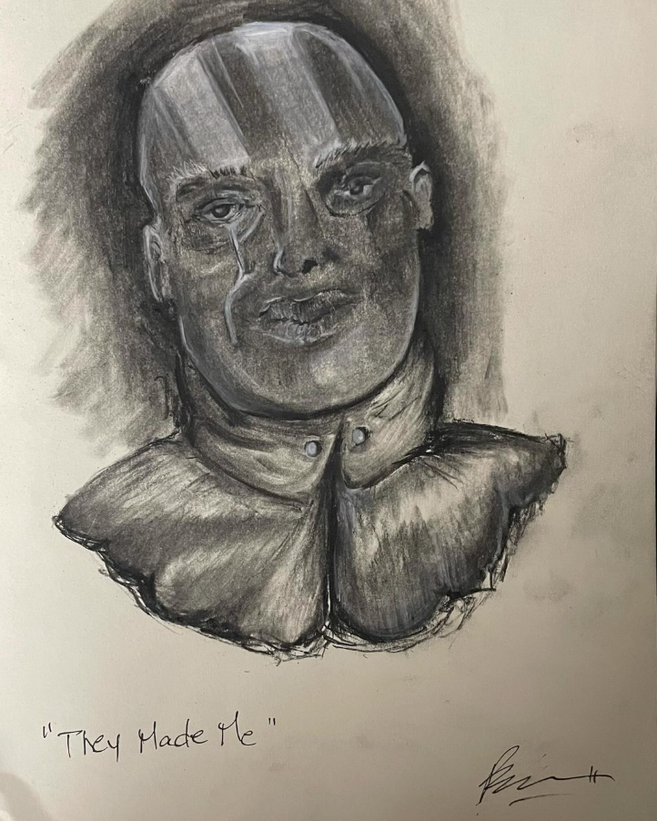

Traditional Work
A collection of my traditional artwork, focusing on physical mediums.
Artwork Gallery


Description
These were my earlier works where I experimented with graphite and charcoal. I was drawn to these mediums because I feel that forms and structure took priority over color. Black n' white is where it is for me.